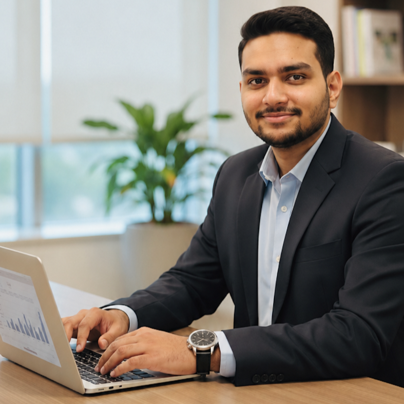

Hello and welcome to my digital profile! My name is Lakshit Sharma, and I am a B.Tech student with a strong interest in technology, music, sports and personal development. I enjoy learning new things, taking on challenges and gaining experiences that help me become a better version of myself.
I believe that college life is not only about academics but also about developing communication skills, confidence, teamwork and creativity. I always try to make the most of every opportunity that allows me to learn something new and interact with different people.
I am a curious, hardworking and ambitious person who enjoys exploring different fields. My interests are not limited to academics because I believe that having multiple interests helps in developing a balanced personality. I particularly enjoy music, volleyball and technology.
Volleyball is one of my favourite hobbies because it has taught me the importance of teamwork, communication and discipline. Playing as a team requires every member to understand their role and support one another. These lessons are useful not only in sports but also in academics and professional life.
Music is another important part of my life. I can play different percussion instruments and have experience performing with groups. I have played drums and currently perform as a bassist in a band. Music has helped me improve my concentration, coordination, confidence and ability to work effectively with a team.
I also enjoy participating in competitions because they give me the opportunity to challenge myself and learn from others. My experiences on stage have taught me how to handle nervousness, stay focused and perform confidently even under pressure.
One of my proudest achievements was securing 2nd place in the regional group music competition named BVP. Participating in this competition was a valuable experience because it required preparation, coordination and dedication from the entire team.
I also secured 2nd position in a band IT competition. This achievement gave me greater confidence in my abilities and motivated me to continue participating in activities outside the classroom.
My musical experience includes playing all major percussion instruments. I have also performed on drums and currently contribute as a bassist in a band. These experiences have strengthened my sense of rhythm, teamwork and stage presence.
For me, achievements are not only about winning positions but also about the skills, memories and lessons gained during the journey.
I completed my 10th and 12th standard education from JPS School, Rudrapur. My school education provided me with a strong foundation in academics as well as extracurricular activities.
During my school years, I participated in various activities that helped me develop confidence, discipline and communication skills. Taking part in music competitions and team activities taught me how to work with others and perform under pressure.
I am currently pursuing my B.Tech, where I am developing my knowledge of programming, technology and engineering concepts. My current goal is to build a strong technical foundation that will support my future career.
My primary technical interest is Artificial Intelligence and Machine Learning (AI/ML). I am fascinated by the way computers can learn from data, identify patterns and make intelligent decisions.
I want to understand how AI and ML can be used to solve real-world problems in areas such as education, healthcare, business, communication and automation. The rapid development of AI motivates me to learn more about this field.
Along with AI/ML, I am interested in improving my programming, problem-solving and web-development skills. I believe that learning different technologies will help me understand how complete software solutions are designed and developed.
My long-term aim is to work on meaningful technology projects where technical knowledge can be combined with creativity and practical problem-solving.
My career goal is to become a rich, successful and independent person. However, I believe that success should not be measured only by money or position. For me, real success also means having knowledge, freedom, confidence and the ability to create a positive impact.
I want to build a successful career in the technology field and continuously improve my technical and professional skills. I want to take on challenging opportunities that help me grow and become capable of creating valuable solutions.
At the same time, I want to help other people grow along with me. I believe that knowledge becomes more valuable when it is shared. In the future, I would like to support my friends, teammates and colleagues by sharing knowledge, opportunities and experiences.
My vision is to grow together with the people around me rather than focusing only on individual success. I want my journey to be an example of how personal ambition and teamwork can go together.
Some of my important strengths are teamwork, discipline, adaptability, creativity and willingness to learn. My participation in sports and music has helped me develop these qualities over time.
Performing music in competitions has improved my ability to remain calm and focused in challenging situations. Playing in a band has also taught me how important communication and coordination are when working with other people.
I consider my willingness to learn as one of my biggest strengths. I am always interested in learning new technologies, developing new skills and improving my existing abilities.
"Success is not just about reaching the top; it is about helping others rise with you."
I believe that every experience teaches us something valuable. Whether it is winning a competition, learning a new technology, playing a sport or performing on stage, every experience contributes to personal growth.
My aim is to keep learning, stay consistent and make progress every day. I want to build a future where I can achieve my ambitions while also becoming someone who encourages and supports others.
Name: Lakshit Sharma
Phone: 938963xxxx
Email:
EMAIL US
GitHub:
My GitHub Profile
I am always open to connecting with fellow students, mentors, developers and people who are interested in technology, music and creative projects.
Thank you for visiting my profile!